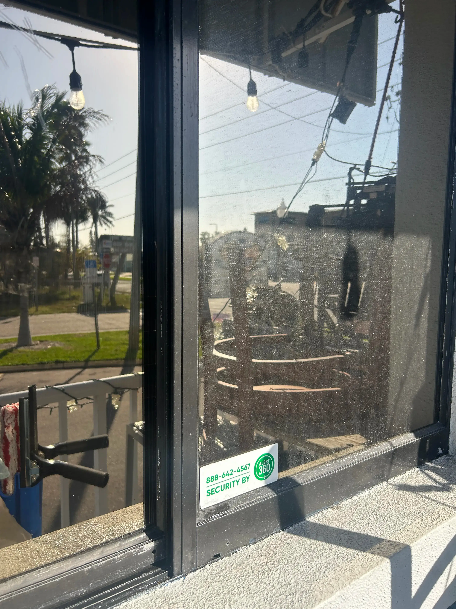
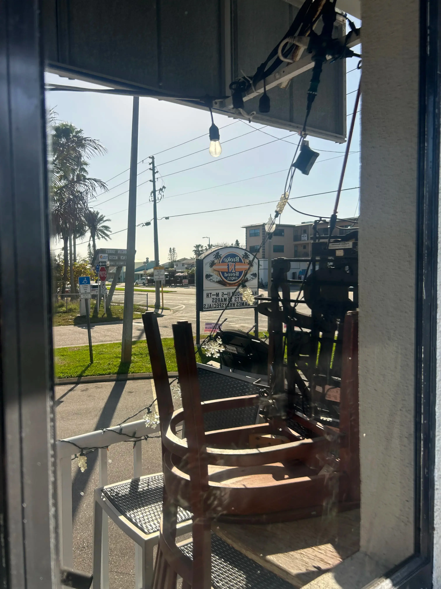
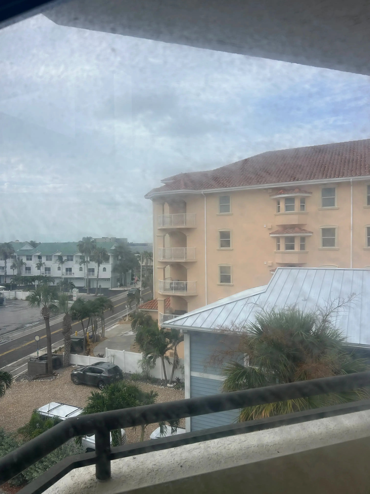
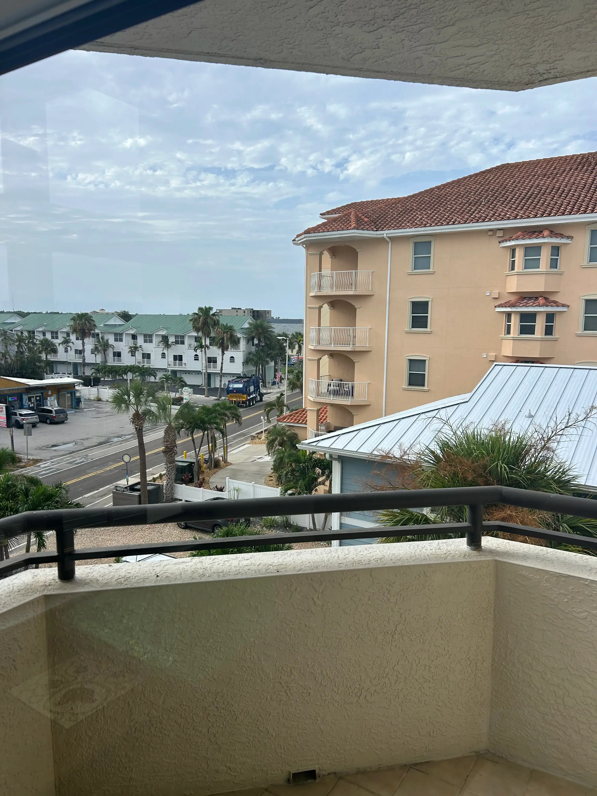
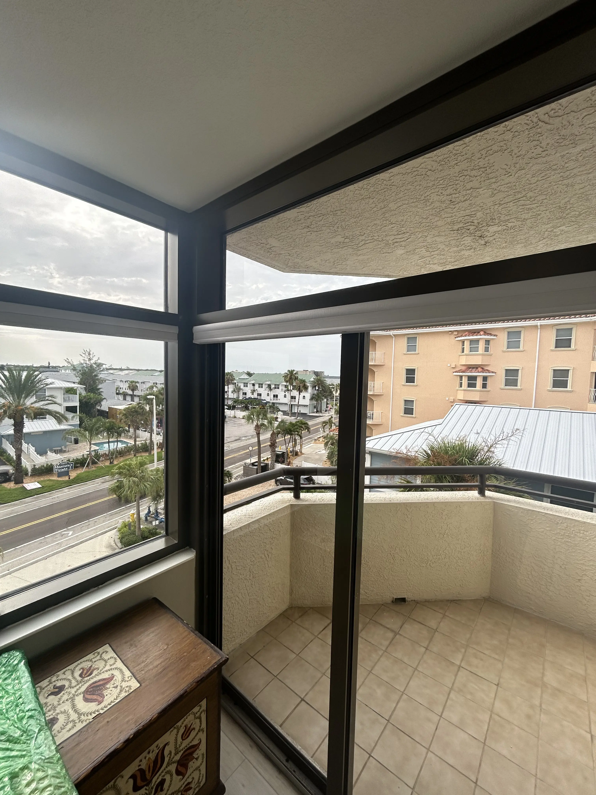
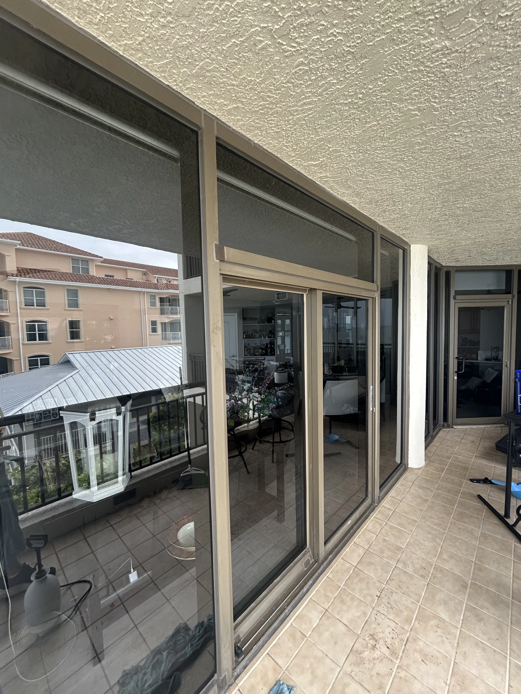
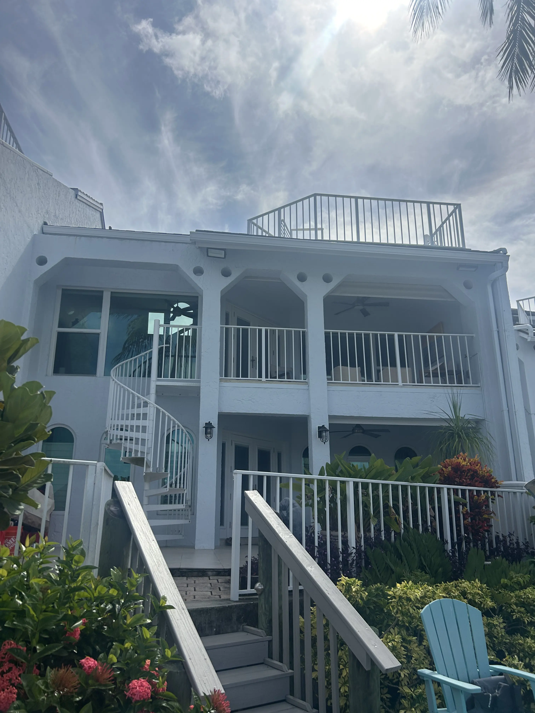
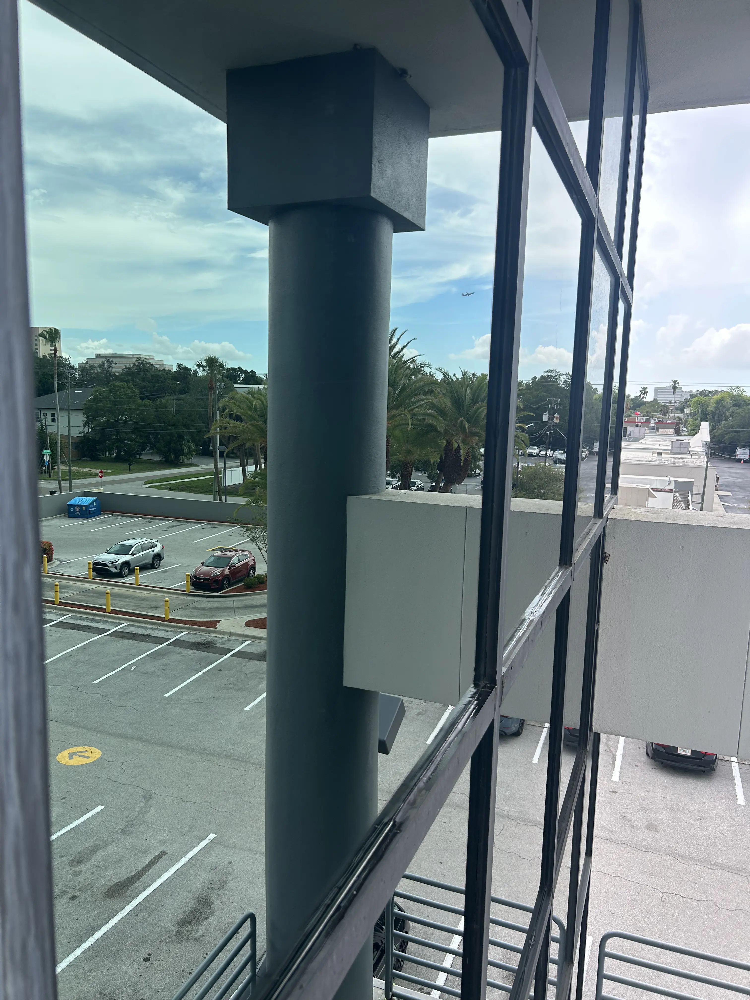
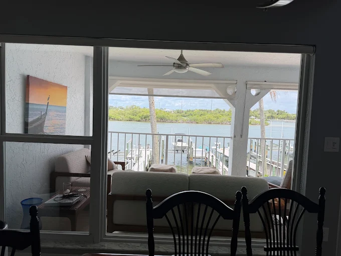
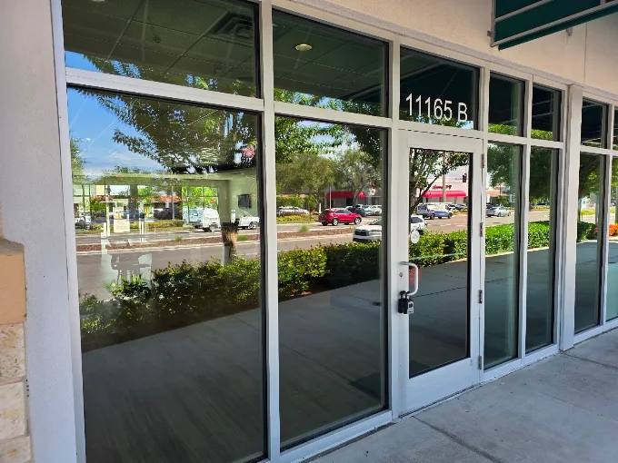

★★★★★
“Very nice to work with. Arrived on time. Great window cleaning. It was such a pleasure that I put the window cleaning on a regular schedule.”
Reviews & Results
Real customer feedback, before-and-after proof, and recent job photos from properties across Pinellas County.
★★★★★
“Very nice to work with. Arrived on time. Great window cleaning. It was such a pleasure that I put the window cleaning on a regular schedule.”
★★★★★
“We at Coastline Title of Pinellas in Seminole had a great experience with Warner Window Cleaning. Luke did an excellent job, his attention to detail was impressive, and the results truly show. His customer service was top-tier, and he was professional, kind, and friendly throughout the entire process. Our windows have never looked better. Highly recommend!”
★★★★★
“Luke did a great job; great attention to detail!”
Real before-and-after results from local commercial and condo cleaning work.
Restaurant Window Cleaning


Condo Window Cleaning


A closer look at recent residential, condo, storefront, and commercial window cleaning work completed by Warner Window Cleaning.

Condo Window Cleaning
Interior and balcony-facing glass cleaned to bring back a brighter coastal view.

Balcony Glass
Detailed glass and frame work for high-use balcony doors and window panels.

Waterfront Property
Multi-level exterior glass cleaned for a polished waterfront property.

Commercial Window Cleaning
Large commercial panes cleaned for clearer views and a sharper building appearance.

Residential View Glass
Interior glass cleaned so the view through the living space feels open and clear.

Storefront Cleaning
Street-facing glass cleaned to help a local business look open, bright, and cared for.